Сургодь
Энциклопедическая статья · Торбеевский район, Республика Мордовия
Сургодь (тат. Сыркыды) — село в Торбеевском районе Республики Мордовия, Россия, расположенное на реке Парце. В историко-краеведческой литературе первое упоминание поселения относится к 1649 году. Село связано с историей служилых татар-мишарей и татарской культуры; здесь родился поэт Хади Такташ.[1][4][5]
Видео о Сургоди
«История села Сургодь Торбеевского района». Автор — Мария Казакова.
Открыть видео на Nuno ↗ · Для просмотра требуется подключение к интернету.
Интересные факты
- Название может происходить от имени человека. В. М. Ковшова связывает топоним Сургодь с дохристианским личным именем Сургодь (Суродей).[6] О названии →
- Село упоминается с XVII века. По исследованию Корнишиной и Куликовой, Сыркыды на Парце известно с 1649 года; это дата упоминания, а не установленного основания.[1] Ранняя история →
- В воспоминаниях о селе названы три мечети. Дагестанский учёный Гасан Алкадари, находившийся в ссылке в Спасске с 1879 года, описывал Сургодь как мусульманское село с двумястами дворами и тремя мечетями.[7] Свидетельство Алкадари →
- Здесь родился Хади Такташ. Один из основоположников татарской советской поэзии родом из Сургоди; в селе действует его музей.[5][4] Культурное наследие →
- Село стало названием поэмы. Такташ посвятил ему «Сыркыды авылы» («Деревня Сыркыды», 1924); в перечне своих произведений он также называл поэму «Село Сургодь».[8][5] Оригинал и перевод →
- Сургодь — родина ещё одного литератора. Критик, журналист и переводчик Загид (Загидулла) Нуркин, по данным Т. Ш. Гилазова, родился здесь в 1888 году в семье муллы.[9] Известные уроженцы →
- В местной реке изучали состав рыб. В исследовании Парцы у Сургоди, опубликованном в 2011 году, в обследованных уловах отмечено пять видов рыб, преимущественно плотва и быстрянка.[2] Река и природа →
- Окрестные степные склоны предлагали взять под охрану. В работе 2015 года предложен ботанический объект площадью 300 га между Никольским и Сургодью; среди его редких растений названы ирис безлистный и адонис весенний. Современный охранный статус здесь не установлен.[10] Степные участки →
- Растения с берегов Парцы вошли в научные гербарные материалы. В ботанической публикации использованы сборы Виноградовой из окрестностей села от 20 июня 1933 года.[11] Естественно-научные исследования →
- Село изучали экспедиции по языку и фольклору. В Сургоди проводились диалектологические исследования 1956 года, а в 1957 году сюда приезжала фольклорная экспедиция ИЯЛИ им. Г. Ибрагимова.[4] Экспедиции →
Название
Русское название села — Сургодь, татарское — Сыркыды. Татарское название употребляется и в современных научных публикациях, в том числе при описании экспедиций XXI века.[4] В. М. Ковшова объясняет происхождение русского топонима личным дохристианским именем Сургодь (Суродей), сопоставляя его с фамилиями Суродин и Суродеев.[6]
В пересказе «Списка населённых мест Тамбовской губернии» 1866 года Ковшова приводит наименование «Сургодь (Дмитровское)». Такое же название указано в работе Г. А. Корнишиной и М. С. Куликовой.[6][1] Дмитровское, таким образом, засвидетельствовано как дополнительное наименование; последовательность официальных переименований этими публикациями не устанавливается.
Примечание к написанию: в тексте Ковшовой напечатано «Сургоди (Дмитровское)»; выше название приведено в нормализованной форме «Сургодь».[6]
География и природа
Село находится в юго-западной части Мордовии, в долине Парцы — правого притока Вада, относящегося к бассейну Мокши. В справочной статье о селе указано расстояние 13 км до районного центра и железнодорожной станции Торбеево.[2][3]
В исследовании О. Н. Артаева и А. Б. Ручина, опубликованном в 2011 году, ширина Парцы у Сургоди оценивалась в 5–10 м, глубина — в 0,3–1,5 м. На широких участках течение характеризовалось как медленное, на узких перекатах — как быстрое; грунт — песчаный с наилком. В обследованных уловах отмечено пять видов рыб, среди которых преобладали плотва и быстрянка.[2]
В окрестностях сохранились участки степной растительности с ковылём перистым и ковылём волосовидным, а также богатым разнотравьем.[12][13] В работе 2015 года по оптимизации сети особо охраняемых природных территорий предлагалось создание ботанического объекта «Степной склон долины реки Парцы» площадью 300 га на правом берегу реки между Никольским и Сургодью. Среди ценных растений этого участка перечислены ирис безлистный, ветреница лесная, прострел раскрытый, адонис весенний и другие виды. Приведённые сведения относятся к природоохранному предложению 2015 года, а не к подтверждению современного юридического статуса территории.[10]
Окрестности села использовались и для изучения ледниковых отложений Мордовии. С. И. Рунков и В. Н. Маскайкин исследовали здесь гранулометрический и минералогический состав морены донского оледенения.[14][15]
История
XVII–XIX века
По данным Корнишиной и Куликовой, с 1649 года упоминается татарская деревня Сыркыды (Сургодь) на Парце в Кадомском уезде. Исследовательницы рассматривают её возникновение в связи с расселением служилых татар и строительством укреплённых линий на юго-восточных рубежах Российского государства в XVII веке. Дата 1649 года в данном случае является датой упоминания, а не документально установленной датой основания.[1]
В XIX веке Сургодь относилась к Спасскому уезду Тамбовской губернии Российской империи. Согласно приводимым в научной литературе сведениям списка населённых мест, основанного на данных 1862 года и изданного в 1866 году, это было казённое село из 180 дворов.[1][6]
Свидетельство о мусульманской общине села оставил дагестанский учёный Гасан Алкадари, находившийся в ссылке в Спасске с 1879 года. В его воспоминаниях, опубликованных в русском переводе Х. А. Омаровым в 2005 году, Сургодь описана как мусульманское село с двумястами дворами и тремя мечетями. Алкадари сообщает о частых встречах и дружеских отношениях с местными учёными и называет трёх факихов: Мирзахана, сына Абдулфатиха, Абубекра, сына Гасанаддина, и Абубекра, сына Мусы. Эти сведения относятся к периоду его ссылки; точный год описанного состояния села в данном фрагменте не указан.[7]
Советский период
Автобиография Хади Такташа от 9 апреля 1926 года, опубликованная С. Ю. Малышевой, называет его родное село в Спасском уезде Пензенской губернии, с пояснением «бывшей Тамбовской». Документ отражает изменение губернской принадлежности уезда в первые советские годы.[5]
В исследовании Р. Р. Юсупова об аграрной модернизации татарских селений Мордовии Сургодь включена в перечень населённых пунктов, где зимой и весной 1930 года происходили массовые выступления в условиях коллективизации. Для села, обозначенного в таблице как «Сургод», указаны дата 27 марта 1930 года и 200 участников — мужчин и женщин. Таблица составлена по документам ЦГА Республики Мордовия: ф. 269-П, оп. 1, д. 147, л. 2–3.[16]
А. Н. Занкина относит Сургодь к татарским населённым пунктам Мордовии, в которых в конце 1920-х — начале 1940-х годов здания мечетей передавались под клубные учреждения. Отдельная дата такой передачи для Сургоди в приведённом перечне не указана.[17]
В советский период село вошло в число пунктов изучения татарских говоров и фольклора: диалектологические исследования проводились здесь в 1956 году, а в 1957 году село посетили участники фольклорной экспедиции ИЯЛИ им. Г. Ибрагимова.[4]
Население
| Год | Численность, человек |
|---|---|
| 2002 | 405 |
| 2010 | 341 |
Числа приведены по сохранённой справочной статье русской Википедии, ссылающейся на сборник итогов переписи 2010 года по Мордовии. Сам сборник при подготовке этого текста получить не удалось; первичная статистическая проверка этих значений не выполнена. Они не являются оценкой населения на 2026 год.
В историко-этнографических исследованиях Сургодь рассматривается как татарское поселение, в том числе в работах о татарах-мишарях Мордовии. Это характеризует историко-культурный контекст села; приведённые исследования не заменяют современных переписных данных о национальном составе.[1][18][4]
Религия и традиционная культура
История села связана с исламом и деятельностью местных мусульманских учёных. О нескольких мечетях и факихах в конце XIX века свидетельствуют воспоминания Алкадари.[7] В современных исследованиях Сургодь фигурирует среди мест сбора материалов о религиозной и обрядовой культуре татар Мордовии.[19][20]
В работе Р. Р. Агишева, О. Н. Бариновой и И. В. Манаевой о похоронно-поминальной обрядности татар-мишарей приведены сведения из Сургоди об использовании монет при подготовке воды для обмывания покойного и о поминальной трапезе. Авторы рассматривают подобные практики в контексте взаимодействия мусульманских норм с местной народной традицией. Эти наблюдения относятся к зафиксированным рассказам и практикам, а не обязательно ко всем жителям села.[18]
Материалы по свадебной обрядности включают запись 1999 года от жительницы Сургоди, использованную М. М. Акашкиным в исследовании межэтнического взаимодействия в традиционных и современных свадебных обрядах Мордовии.[21]
Литература и культурное наследие
Сургодь — родина Хади Такташа (Мухамметхади Хайрулловича Такташева, 1901–1931), одного из основоположников татарской советской поэзии. В селе действует посвящённый ему музей; его существование отмечено в публикации Малышевой 2021 года и в статье об экспедициях ИЯЛИ 2026 года.[5][4]
Село вошло в татарскую литературу под названием Сыркыды. Поэма Такташа «Сыркыды авылы» («Деревня Сыркыды», 1924) рассматривается Л. Р. Надыршиной как произведение о столкновении старого и нового миров в послереволюционной деревне. В опубликованном перечне своих произведений Такташ также называет поэму «Село Сургодь».[8][5] Художественные персонажи и события поэмы сами по себе не являются документальным описанием истории поселения.
М. М. Хабутдинова отмечает участие литературоведа Ш. Садретдинова в жизни Сыркыды: он организовывал мероприятия, посвящённые творчеству Такташа, и содействовал решению хозяйственных вопросов местного колхоза.[22]
Научное изучение
Фольклорные и диалектологические экспедиции
В обзоре И. И. Ямалтдинова село указано среди пунктов диалектологического обследования 1956 года. Во время фольклорной экспедиции 31 июля — 1 сентября 1957 года Сыркыды посетила группа И. Надирова и Р. Каримова. Собранный экспедицией корпус хранится в Центре письменного наследия ИЯЛИ им. Г. Ибрагимова АН Татарстана; автор ссылается на коллекцию 59. Эта ссылка относится к экспедиционному собранию в целом и не даёт отдельного шифра сургодских записей.[4]
Село также входило в маршрут комплексной экспедиции института 27 мая — 7 июня 2024 года. В её составе работали специалисты по фольклору, языку, музыке, археографии, искусству и эпиграфике. Ямалтдинов описывает включение экспедиционных материалов в электронный фонд татарского фольклора Tatfolkfound, интегрированный в ГИС «Культурное наследие Татарстана и татарского народа».[4]
Естественно-научные исследования
Парца у Сургоди включена в пункты гидробиологических и ихтиологических исследований речной системы Вада и Мокшанского бассейна.[2][23][24] Ботанические работы используют гербарные сборы из окрестностей села, в том числе сбор Виноградовой от 20 июня 1933 года в прирусловой пойме Парцы, опубликованный Е. В. Письмаркиной.[11] Местные степные и пойменные участки рассматриваются в исследованиях редких растений и флористических находок бассейна Мокши.[25][26]
В энтомологических публикациях приводятся сборы пчёл семейства Halictidae из Сургоди за 2016 год и сетчатокрылых из окрестностей села за 2020 год.[27][28]
Известные уроженцы
Жители Сургоди · интерактивные таблицы
Опубликованный перевод infernis (ВГД, 13.10.2021), оригинал не сверен. 105 карточек, 35 рождений, 70 связей. «—» означает неизвестное. Приход не доказывает место проживания; календарь дат не пересчитан.
Данные встроены в HTML и доступны без сети. Исходные CSV: жители · рождения · связи ·
Загружаю встроенные данные…
Карты
Два топографических листа с прочитанной подписью Сургоди и одна обзорная карта региона. Даты изданий прочитаны по рамкам; дореволюционных карт в этой подборке пока нет. Нажмите изображение для увеличения; ←/→ — листать, Esc — закрыть.

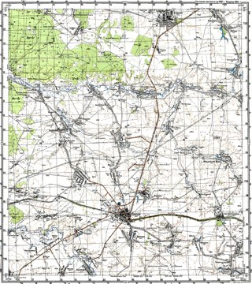
Источник: Коллекция топографических карт maps.vlasenko.net.
Фрагмент с подписью села.


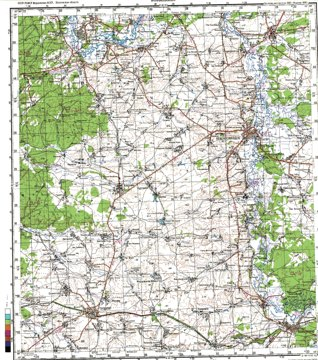
Источник: Коллекция топографических карт maps.vlasenko.net.
Фрагмент с подписью села.


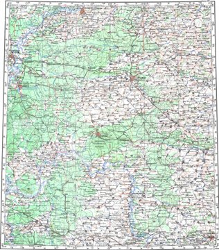
Источник: Коллекция топографических карт maps.vlasenko.net.
Архивные фотографии
Найден один подтверждённый снимок села XX века. Цель — десять архивных фотографий — пока не достигнута; остальные снимки в фотоархиве Такташа нельзя автоматически относить к Сургоди. Нажмите изображение для увеличения; ←/→ — листать, Esc — закрыть.

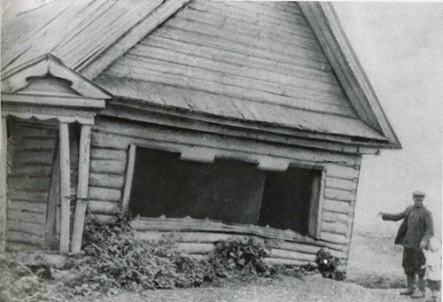
Источник: Национальная библиотека РТ / Wikimedia Commons.
Фотографии XXI века
Десять снимков: репортаж о селе и музее 2024 года и школьное мероприятие 2011–2012 учебного года. Это датированные источники, а не подтверждение состояния села на сегодняшний день. Нажмите изображение для увеличения; ←/→ — листать, Esc — закрыть.

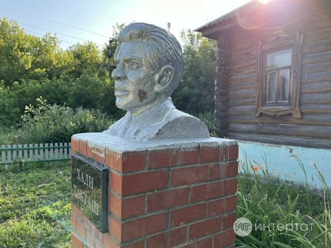
Источник: Интертат, репортаж от 24.07.2024.

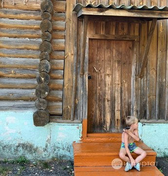
Источник: Интертат, репортаж от 24.07.2024.

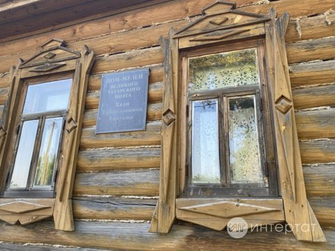
Источник: Интертат, репортаж от 24.07.2024.

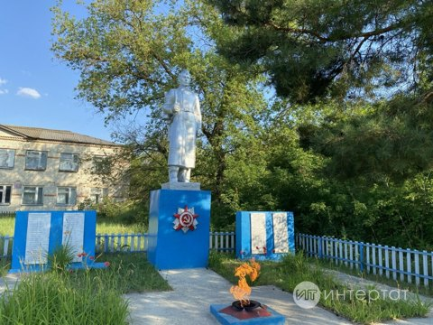
Источник: Интертат, репортаж от 24.07.2024.

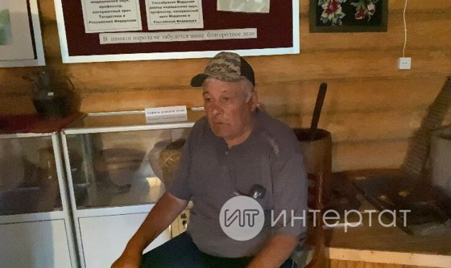
Источник: Интертат, репортаж от 24.07.2024.

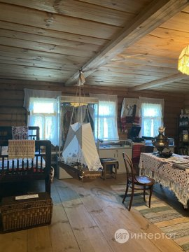
Источник: Интертат, репортаж от 24.07.2024.

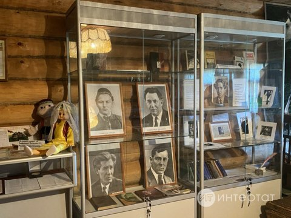
Источник: Интертат, репортаж от 24.07.2024.

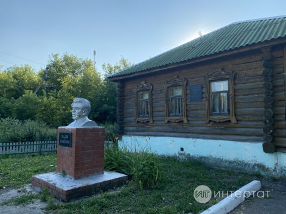
Источник: Интертат, репортаж от 24.07.2024.

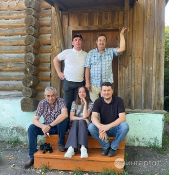
Источник: Интертат, репортаж от 24.07.2024.

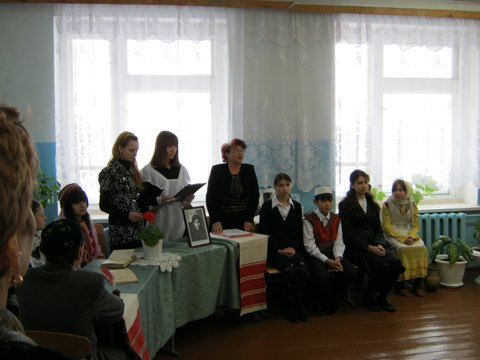
Источник: Сайт Сургодьской школы, раздел «Новости».
Татары-мишари · исторические изображения
Две фотографии 1897 года и книжная иллюстрация военной формы мещерякских кантонов XIX века. Подборка даёт общий этнографический и военно-исторический контекст: место съёмки фотографий в источниках не уточнено, связь изображений с Сургодью не установлена. Служилый статус людей на фотографиях не подтверждён. Книжный лист показывает мещерякскую службу XIX века; по нему нельзя восстанавливать облик служилых татар села XVII века. Нажмите изображение для увеличения; ←/→ — листать, Esc — закрыть.

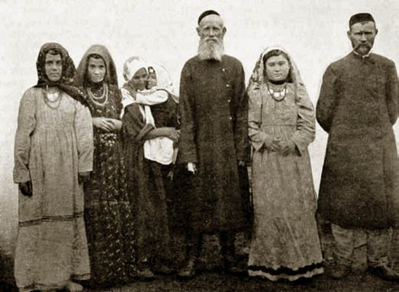
Источник: Wikimedia Commons; первичная веб-публикация — «Посреди России».

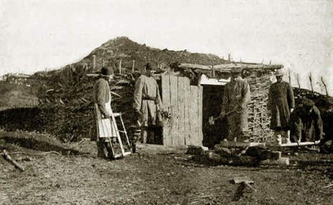
Источник: «Посреди России», «Мишари или мещеряки Уфимской губернии», 26.10.2015.

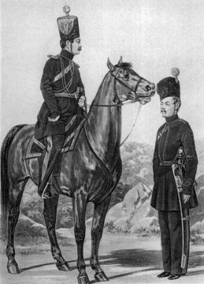
Источник: «Историческое описание одежды и вооружения российских войск», под ред. А. В. Висковатова, ч. 27, ил. 1261; Wikimedia Commons.
Хади Такташ · «Сыркыды авылы»
«Деревня Сыркыды». Полный текст выбранной версии Wikisource и новый смысловой перевод на русский, выполненный OpenCode (22.10.2026). Перевод не воспроизводит рифму и не является опубликованным литературным переводом. Колонки выровнены по строфам.
Источник татарского текста: Wikisource, редакция 388586; сохранённая страница. Орфография выбранной электронной версии сохранена. Условия текста и перевода: CC BY-SA 4.0. Татарский TXT · Русский TXT.
Примечания к переводу
- «Ләхәүлә» — сокращённое молитвенное восклицание «Ля хауля…». Оно оставлено в транслитерации.
- «Сабынчы марҗалар» буквально передано как «мыловарки-марьи»: насмешливая реплика персонажа; точный историко-бытовой оттенок требует комментария специалиста.
- «Тозлап, борычлап» — буквально «посолив, поперчив»; в письме сохранён шутливый образ. «Борынлар» передано по смыслу как «нос утрёт».
- «Утлы таган» передано буквально как «огненные качели»; образ не заменён вольным толкованием.
- В электронной версии встречаются слитное «бүгенэшли», форма «Икенне» и необычное «кыш тәне». Они сохранены слева; последнее буквально переведено как «тело зимы». С печатным собранием сочинений текст не сверен.
- Имена переданы в русской транскрипции. Политическая и антирелигиозная лексика воспроизводит речь поэмы.
Примечания
Нумерация страниц PDF ниже обозначает порядковые страницы скачанного файла, а не печатную пагинацию. Подлинник упоминания 1649 года и издание списка населённых мест 1866 года непосредственно не просмотрены: соответствующие сведения приведены со ссылкой на научные публикации, которые их сообщают. Архивные шифры воспроизводятся по публикациям; архивные дела непосредственно не изучались.
- ↑1 ↑2 ↑3 ↑4 ↑5 ↑6 ↑7 ↑8 Г. А. Корнишина; М. С. Куликова. ЭТАПЫ ФОРМИРОВАНИЯ ПОЛИКУЛЬТУРНОЙ ПОСЕЛЕНЧЕСКОЙ СРЕДЫ ТОРБЕЕВСКОГО РАЙОНА РЕСПУБЛИКИ МОРДОВИЯ // Историко-культурное наследие народов Урало-Поволжья. 2026. Онлайн-источник. Страницы PDF с упоминаниями: 4; 5. DOI: 10.62669/30342139.2026.1.7.
- ↑1 ↑2 ↑3 ↑4 ↑5 Артаев О.Н.; Ручин А.Б.. Материалы к изучению рыб речной системы реки Вад // Труды Мордовского государственного природного заповедника им. П. Г. Смидовича. 2011. Онлайн-источник. Страницы PDF с упоминаниями: 3; 6.
- ↑1 ↑2 ↑3 Сургодь // Русская Википедия. Сохранённая версия статьи, идентификатор редакции 153802701. Онлайн-версия; локальная копия. Использована только как вторичный справочный источник расстояния и численности населения. Таблица населения ссылается на «Численность и размещение населения Республики Мордовия. Итоги Всероссийской переписи населения 2010 года»; прямой доступ к этому сборнику при проверке не получен.
- ↑1 ↑2 ↑3 ↑4 ↑5 ↑6 ↑7 ↑8 ↑9 ↑10 Ямалтдинов Ильмир Ильдарович. Г. Ибраһимов исемендәге Тел, әдәбият һәм сәнгать институтының Мордовия Республикасына фәнни экспедицияләре // Фәнни Татарстан. 2026. Онлайн-источник. Страницы PDF с упоминаниями: 3; 4; 5. На татарском языке; русское заглавие: «Научные экспедиции ИЯЛИ имени Г. Ибрагимова в Республику Мордовия». DOI: 10.24852/2499-9741.2026.3.60.67.
- ↑1 ↑2 ↑3 ↑4 ↑5 ↑6 ↑7 Малышева Светлана Юрьевна. «Студенческое» дело Хади Такташа // Гасырлар авазы - Эхо веков. 2021. Онлайн-источник. Страницы PDF с упоминаниями: 2; 6; 8.
- ↑1 ↑2 ↑3 ↑4 ↑5 Ковшова Валентина Михайловна. К 70-летию образования Мордовской автономной области. // Гасырлар авазы - Эхо веков. 2000. Онлайн-источник. Текст HTML.
- ↑1 ↑2 ↑3 Омаров Халата Абдуллаевич. Отрывок из «Диван ал-Мамнун» (эпизоды из моей жизни в ссылке) Алкадари // История, археология и этнография Кавказа. 2005. Онлайн-источник. Страницы PDF с упоминаниями: 5.
- ↑1 ↑2 Надыршина Лейсан Радифовна. ОСОБЕННОСТИ РАЗВИТИЯ ЖАНРА ПОЭМЫ В ТАТАРСКОЙ ЛИТЕРАТУРЕ ПЕРВОЙ ПОЛОВИНЫ 1920-Х ГГ. // Филологические науки. Вопросы теории и практики. 2021. Онлайн-источник. Страницы PDF с упоминаниями: 3.
- ↑1 ↑2 Гилазов Тагир Шамсегалиевич. Рассказ г. Ибрагимова «Один эпизод из жизни молодежи» в литературной критике 1910-х годов // Филология и культура. 2017. Онлайн-источник. Страницы PDF с упоминаниями: 4.
- ↑1 ↑2 Варгот Е.В.; Силаева Т.Б.; Ручин А.Б.; Кузнецов В.А.; Хапугин А.А.; Лапшин А.С.; Спиридонов С.Н.; Письмаркина Е.В.; Гришуткин Г.Ф.; Чугунов Г.Г.; Артаев О.Н.; Гришуткин О.Г.; Лобачев Е.А.; Лукиянов С.В.; Андрейчев А.В.. Сеть особо охраняемых природных территорий Республики Мордовия и рекомендации к её оптимизации // Труды Мордовского государственного природного заповедника им. П. Г. Смидовича. 2015. Онлайн-источник. Страницы PDF с упоминаниями: 55.
- ↑1 ↑2 Письмаркина Е. В.. Дополнения в конспект флоры Республики Мордовия по материалам гербария им. И. И. Спрыгина Пензенского государственного педагогического университета // Известия Пензенского государственного педагогического университета им. В. Г. Белинского. 2012. Онлайн-источник. Страницы PDF с упоминаниями: 3.
- ↑1 Письмаркина Е.В.; Кирюхин И.В.; Силаева Т.Б.. Флористические находки в городах республики Мордовия // Фиторазнообразие Восточной Европы. 2006. Онлайн-источник. Страницы PDF с упоминаниями: 2; 4.
- ↑1 Макаркин Владимир Николаевич; Ручин Александр Борисович. Сетчатокрылые (Neuroptera) и верблюдки (Raphidioptera) Республики Мордовии: новые данные и предварительные итоги // Амурский зоологический журнал. 2024. Онлайн-источник. Страницы PDF с упоминаниями: 4.
- ↑1 Рунков Сергей Иванович; Маскайкин Виктор Николаевич. Особенности гранулометрического состава отложений древнеледниковой формации на территории Мордовии // Научное обозрение. Международный научно-практический журнал. 2019. Онлайн-источник. Страницы PDF с упоминаниями: 3; 4; 5; 6.
- ↑1 Рунков Сергей Иванович; Маскайкин Виктор Николаевич. МИНЕРАЛОГИЯ НЕОПЛЕЙСТОЦЕНОВЫХ МОРЕН И МОРЕНОПОДОБНЫХ ОТЛОЖЕНИЙ ТЕРРИТОРИИ МОРДОВИИ // Вестник Забайкальского государственного университета. 2021. Онлайн-источник. Текст HTML.
- ↑1 Юсупов Ринат Равильевич. Татары-мишари в условиях аграрной модернизации 1930-х годов (по материалам Мордовии) // Известия Российского государственного педагогического университета им. А. И. Герцена. 2009. Онлайн-источник. Страницы PDF с упоминаниями: 3.
- ↑1 Занкина Анна Николаевна. ДЕЯТЕЛЬНОСТЬ КЛУБНЫХ УЧРЕЖДЕНИЙ В СОВЕТСКИЙ ПЕРИОД (НА ПРИМЕРЕ ТАТАРСКИХ НАСЕЛЕННЫХ ПУНКТОВ МОРДОВИИ) // Гуманитарий: актуальные проблемы гуманитарной науки и образования. 2023. Онлайн-источник. Страницы PDF с упоминаниями: 8.
- ↑1 ↑2 Агишев Руслан Ряфатевич; Баринова Ольга Николаевна; Манаева Ирина Владимировна. ПОХОРОННО-ПОМИНАЛЬНАЯ ОБРЯДНОСТЬ ТАТАР-МИШАРЕЙ РЕСПУБЛИКИ МОРДОВИЯ // Исламоведение. 2021. Онлайн-источник. Страницы PDF с упоминаниями: 4; 5; 6.
- ↑1 Агишев Руслан Ряфатевич. "народный" ислам в республике Мордовия: отдельные аспекты религиозного и культурного синкретизма // Исламоведение. 2019. Онлайн-источник. Страницы PDF с упоминаниями: 4.
- ↑1 Агишев Руслан Ряфатевич. «Народный ислам». Религиозный синкретизм татар Республики Мордовия // История повседневности. 2024. Онлайн-источник. Страницы PDF с упоминаниями: 7.
- ↑1 Акашкин Михаил Михайлович. Межэтническое взаимодействие в системе традиционных и современных свадебных обрядов на территории Республики Мордовия // Манускрипт. 2020. Онлайн-источник. Страницы PDF с упоминаниями: 5.
- ↑1 Хабутдинова Милеуша Мухаметзяновна. Ш. Садретдинов - знаток татарской литературы ХIХ и начала XX вв // Филология и культура. 2016. Онлайн-источник. Страницы PDF с упоминаниями: 2.
- ↑1 Артаев Олег Николаевич; Варгот Елена Вячеславовна; Ручин Александр Борисович; Агеева Анна Михайловна; Хапугин Анатолий Александрович. Биотопическая характеристика некоторых рек Мокшанского бассейна // Инженерные технологии и системы. 2011. Онлайн-источник. Текст HTML.
- ↑1 Ермаков А.С.; Артаев О.Н.; Ильин И.В.; Ермаков О.А.; Ручин А.Б.; Лёвин Б.А.. Распространение украинской миноги Eudontomyzon mariae (Berg, 1931) в бассейнах Суры и Мокши // Труды Мордовского государственного природного заповедника им. П. Г. Смидовича. 2013. Онлайн-источник. Страницы PDF с упоминаниями: 5.
- ↑1 Агеева Анна Михайловна; Хапугин Анатолий Александрович; Силаева Татьяна Борисовна; Варгот Елена Вячеславовна; Письмаркина Елена Васильевна; Чугунов Геннадий Геннадьевич. Редкие виды сосудистых растений в бассейне реки Мокши в пределах республики Мордовия // Известия Самарского научного центра Российской академии наук. 2012. Онлайн-источник. Страницы PDF с упоминаниями: 4.
- ↑1 Казакова Марина Васильевна; Письмаркина Елена Васильевна; Соболев Николай Андреевич. Флористические находки в бассейне реки Мокши // Turczaninowia. 2018. Онлайн-источник. Страницы PDF с упоминаниями: 7.
- ↑1 Д.А. Сидоров; Т.В. Левченко ; Д.В. Димакова. ПЧЕЛЫ СЕМЕЙСТВА HALICTIDAE (HYMENOPTERA: ANTHOPHILA) МОРДОВИИ, ИСКЛЮЧАЯ РОД LASIOGLOSSUM // Труды Мордовского государственного природного заповедника им. П. Г. Смидовича. 2026. Онлайн-источник. Страницы PDF с упоминаниями: 7; 10; 11; 13; 14.
- ↑1 Макаркин В.Н.; Ручин А.Б.. НОВЫЕ ДАННЫЕ О СЕТЧАТОКРЫЛЫХ (NEUROPTERA) И ВЕРБЛЮДКАХ (RAPHIDIOPTERA) СРЕДНЕГО ПОВОЛЖЬЯ // Труды Мордовского государственного природного заповедника им. П. Г. Смидовича. 2021. Онлайн-источник. Страницы PDF с упоминаниями: 27.
Литература и ссылки
Основная использованная литература приведена в примечаниях. Полный рассмотренный корпус, включая работы с литературными и библиографическими упоминаниями, представлен в каталоге публикаций и таблице CSV.
- ГИС «Культурное наследие Татарстана и татарского народа» — ресурс, описанный в статье Ямалтдинова.
- Справка о языках архивных источников и направлениях дальнейшего поиска.
- Исследовательская справка о названиях и источниках.
Об орнаменте оформления
Кайма — новый авторский SVG-рисунок OpenCode (22.10.2026): тюльпан, парные листья, волнообразный побег и небольшие розетки. Эти мотивы описаны в татарской орнаментальной традиции. Приглушённая зелёно-золотистая палитра выбрана для интерфейса.
Источники: Г. Ф. Валеева-Сулейманова, «Орнамент» и «Вышивка» (Tatarica); Л. Ф. Фасхутдинова, «Золотное шитье татар-мишарей: особенности техники и орнамента» // Этнографическое обозрение. 2015. № 4. С. 169–176 (проверены карточка и аннотация).
Источники подтверждают татарскую орнаментальную традицию и исследования мишарского стиля; особый узор именно Сургоди по ним не установлен. Рисунок — современная стилизация, а не реконструкция местного музейного образца. Исходный SVG; справка и сохранённые источники.

Редакционная справка о подготовке текста
Статья составлена по корпусу из 32 поисковых записей; изучены извлечённые тексты и все относящиеся к селу фрагменты. Запись 27 исключена из числа самостоятельных подтверждений: страница о прорастании Salvia glutinosa содержит полный журнальный выпуск, а совпадение относится к статье о флоре Парцы (запись 09). Остаётся 31 релевантная публикация, включая литературные и библиографические упоминания. Работы 09, 30–32 рассмотрены, но не используются как дополнительные независимые свидетельства исторических событий.
Текст написан заново в энциклопедическом стиле. Из существующей статьи Википедии заимствованы только отдельно оговорённые справочные данные о численности населения и расстоянии до Торбеева. Утверждения из неё о сельсовете в 1866 году, подробностях коллективизации, пожаре, военных потерях и современном состоянии учреждений не перенесены без достаточной проверки. Новых архивных дел в ходе подготовки статьи не получено. Результат является локальным энциклопедическим материалом, а не публикацией в Википедии.